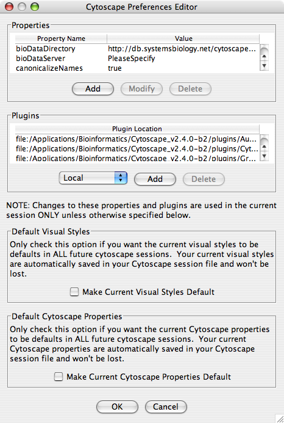
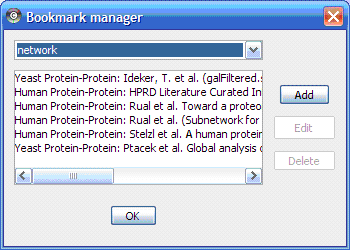
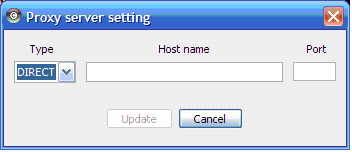

Table 8.
Important! If you have used previous versions of Cytoscape, you will notice that handling of properties has changed. The most important change is that properties are no longer saved by default to the current directory or to your home .cytoscape directory. Properties are stored by default in Cytoscape Session files. The cytoscape.props file still exists in the .cytoscape directory but is only written to when the user explicitly requests that the current settings be made the defaults for all future sessions of Cytoscape. Unless you have something important in your .cytoscape/cytoscape.props file, your best bet will be to delete the file and use the defaults. |
The Cytoscape Preferences Dialog, accessed via Edit → Preferences → Properties…, has sections for general properties display/editing and plugins specification via the properties mechanism. Preferences are now stored in Cytoscape session files. Any changes made to properties while running Cytoscape will be saved to the current session when you save the session. If you do not save the session, export the properties (File → Export), or set them as defaults (see below), the properties will be lost and the next time Cytoscape starts, defaults will be used.
Cytoscape properties are displayed in the Properties section of the dialog. These properties are configurable via Add, Modify and Delete operations.

Some common properties are described below.
Table 9.
Property name | Default value | Valid values |
defaultSpeciesName | PleaseSpecify | Species name. This value must match the name in the first line of the file specified in the bioDataServer’s manifest for synonyms e.g., for yeast synonyms, specify Saccharomyces cerevisiae |
bioDataServer | PleaseSpecify | annotation/manifest, and other manifest file locations |
viewThreshold | 10000 | integer > 0 |
secondaryViewThreshold | 30000 | integer > 0 |
viewType | tabbed | tabbed |
plugins |
| comma-separated list of jar files containing plugins, or URL’s to jar files containing plugins (e.g., http://server/my-plugin.jar) |
defaultWebBrowser |
| A path to the web browser on your system. This only needs to be specified if Cytoscape can’t find the web browser on your system. |
The specification of plugins to be loaded into Cytoscape at startup time is also supported in cytoscape.props and accessible in this dialog under the Plugins section. In this special case, the plugins property specifies a comma-separated list of jar files or URLs to jar files containing plugins. This property is parsed and presented and managed in the Plugins table, as at left.
Setting Default Properties It is possible to alter the default properties for Cytoscape. In the Cytoscape Preferences Dialog, accessed via Edit → Preferences → Properties…, edit any preferences, then click the "Make Current Cytoscape Properties Default" checkbox in the "Default Cytoscape Properties" section of the dialog. This will save any properties to the .cytoscape directory contained in your home directory. You should only do this if you want specific properties to apply to all of your Cytoscape sessions. You can rely on the Cytoscape session file to maintain the properties used for that particular session, so making certain properties default is not necessary to save the properties.
You can manage the available bookmarks on the system from the Edit → Preferences → Bookmarks… menu.

There are currently two types of bookmarks network and annotation. Network bookmarks are URLs pointing to network files available on the internet. These are nomal networks that can be loaded into Cytoscape. The annotation bookmarks are URLs pointing to ontology annotation files. The annotation bookmarks are only used when importing an ontology.
You can define and configure a proxy server for Cytoscape to use from the Edit → Preferences → Proxies… menu.

After the proxy server is set, all network traffic related to loading a network from URL will pass through the proxy server. Other plugins use this capability as well.